8.6 Diffusion Model——DDPM
前言
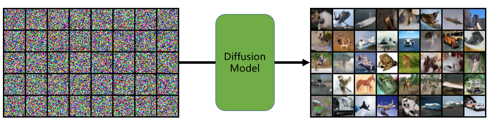
2020年，DDPM横空出世，将扩散模型概念迅速扩散到深度学习各个领域，并在2022年随着Stable Diffusion的提出及开源，该技术实现了破圈，走入了大众的视野，而不再是科技工作者才了解的概念。
为此，对扩散模型原理进行简要介绍，并通过代码实现DDPM模型，同时介绍Stable Diffusion 模型背后的原理。
本文主要内容包括
- Diffusion Model 概念介绍
- DDPM 模型原理及代码实现，训练、推理
- Guided Diffusion：引导条件的扩散模型介绍，包括classifier-base 和 classifier-free 两大主流模型
- Stable Diffusion：让技术出圈的模型
- Latent Diffusion Model（LDM）：Stable Diffusion背后的核心技术
Diffusion Model 简介
扩散模型（Diffusion Model）发展至今已成为一个大的概念、思想，扩散是借鉴物理学中的扩散过程（Diffusion Process）概念。
物理学中扩散是一种物质分子在非均匀环境中的运动，物质从高浓度区域向低浓度区域传输，最终实现浓度均衡。
在深度学习中，则是将噪声加入到原始图像中进行扩散，最终使图片变为噪声，然后利用深度学习模型学习从噪声变到图像的过程，最后可以随机生成噪声，并利用模型将噪声生成图片的过程。
深度学习中扩散的概念自2015就有了，并在2019年发表于论文《Generative Modeling by Estimating Gradients of the Data Distribution》，
最终在2020年的《Denoising Diffusion Probabilistic Models》中被大众熟知，随后就开启了扩散模型的学术界扩散，如DALL-E 2，imagen， Stable Diffusion等强大应用。
DDPM 实现噪声到图片步骤
此处借鉴李宏毅教授2023年春季期ML课程中课件进行讲解。
DDPM模型推理过程是将一个标准正态分布中采样的噪声图片（与原图同尺寸），经过T步（1000步）的去噪（Denoising），生成高质量图像的过程。
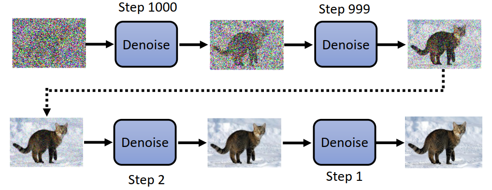
DDPM模型推理过程，可以看似将噪声逐步的去除，先获得图像大体轮廓，逐步精雕细琢，获得清晰的图像。
这就像雕像制作过程，工匠常说：“雕像本身就在石头里，我只是把多余的部分剔除掉”，雕刻雕像的过程就像噪声变到高质量图像的过程，一开始它们都是可以生成“万物”的本源。
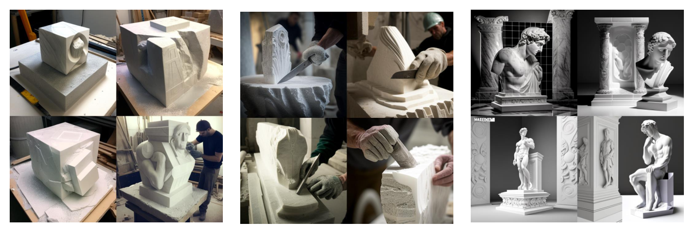
如何对Denoise模块进行数学建模，使得噪声逐步变清晰？
可以这么做，设计一个神经网络，它接收噪声图以及当前步数，输出一个噪声，然后与原图相减，获得更清晰的图片。
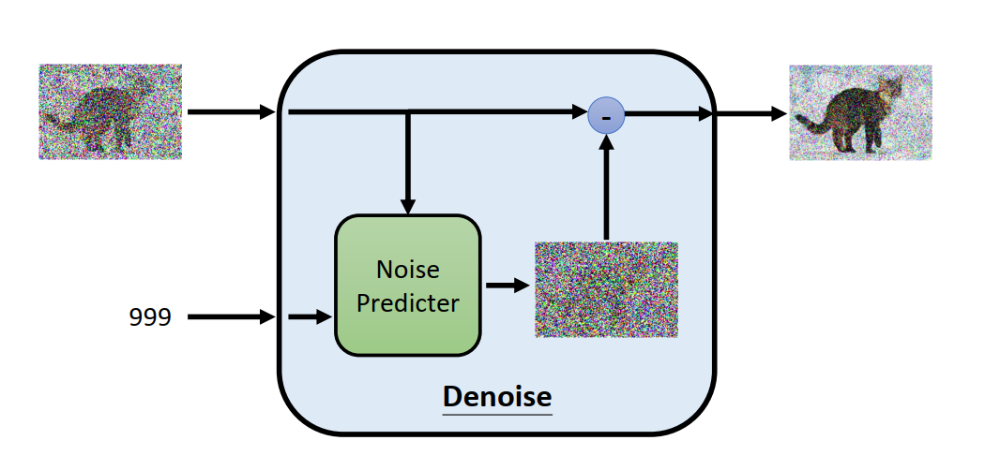
如何训练这样的神经网络模型？训练数据如何构建？
前面提到噪声如何变图像，现在反过来看看，图片如何变噪声的过程。
对于原图，经过T步的逐渐加高斯噪声，使图像逐步模糊，最终趋近于标准高斯分布。
这其中就可以构建Noise Predicter的训练数据，例如蓝色框中为输入，红色框噪声则是反向过程时期望预测的标签。
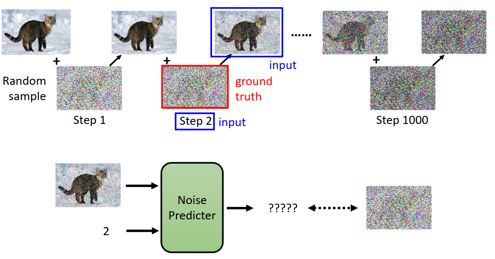
对于具体模型，DDPM中采用了Unet架构的神经网络实现数据预测。
到这里，DDPM实现从噪声生成图像的步骤就清晰了：
- 前向过程：将原图逐步添加噪声， 共1000步
- 反向过程：利用神经网络学习加噪图像到噪声的变换，使得模型可以去噪
- 推理使用：随机采样，得到高斯噪声，然后逐步去噪，经过1000步去噪，得到清晰图像。
DDPM 公式理解
根据上述步骤，可以将DDPM训练、推理过程采用数学形式表达，如下图所示
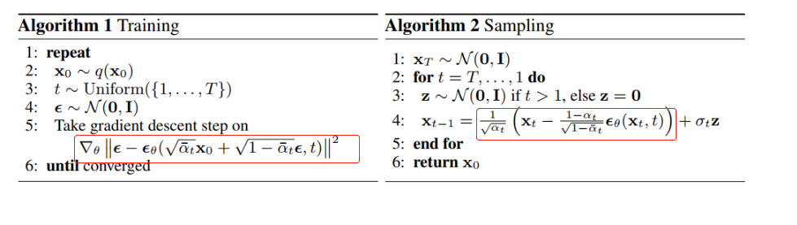
训练过程：
- q(x0) 表示原始图像数据集（分布），x0表示一张原始图像
- t 看成是1到1000的均匀分布采样
- ε 表示从标准正态分布中采样得到的噪声图像
- εθ 表示模型需要学习到的噪声图像，该图像是利用unet生成的，unet接收上一步去噪图与当前步数t，预测出一个噪声图像，并且期望它与高斯噪声越接近越好。即ε - εθ 趋于0。
- αt_bar：均值系数，可由重参数方法训练而来，或是固定值。固定值如0.0001 到0.02线性插值。
推理过程：
- xT：从正态分布中随机采样的噪声
- z：从正态分布中随机采样的噪声
- xt-1：主要是由Xt减去模型生成的噪声图像，并且以一定的权重加权后，加上标准差乘以随机噪声。至于原因需要看原文及进行公式推导理解了
更多公式推导，推荐阅读
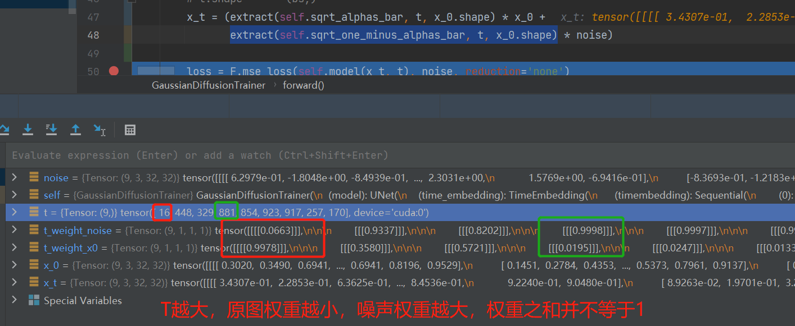
DDPM 模型结构
下面通过代码进行DDPM模型结构的剖析，官方代码为TF版，在这里采用非官方的PyTorch版。
论文采用TPU v3-8（相当于8张V100 GPU），在cifar10上花了10.6小时，由此可见，要想在256x256的图片上训练，会非常耗时。
为了快速使用DDPM，这里采用cifar10进行学习。
通过代码分析，DDPM模型结构如下图所示，是在unet结构上进行了一些改进，包括加入时间步t的embedding，卷积中采用了ResBlock，并且采用了Self-Attention机制。
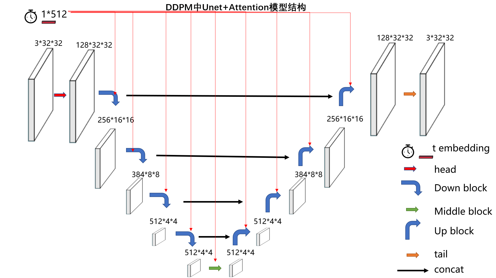
如图例所示，模型整体有7个组件，彩色箭头是一组操作，包含2-3个网络层的堆叠，通常最后一个网络层才会改变图像分辨率。
第一个，时间步的embedding，它会输入到除了head，tail的其它网络层当中，并且是add的形式添加的（h += self.temb_proj(temb)[:, :, None, None]）
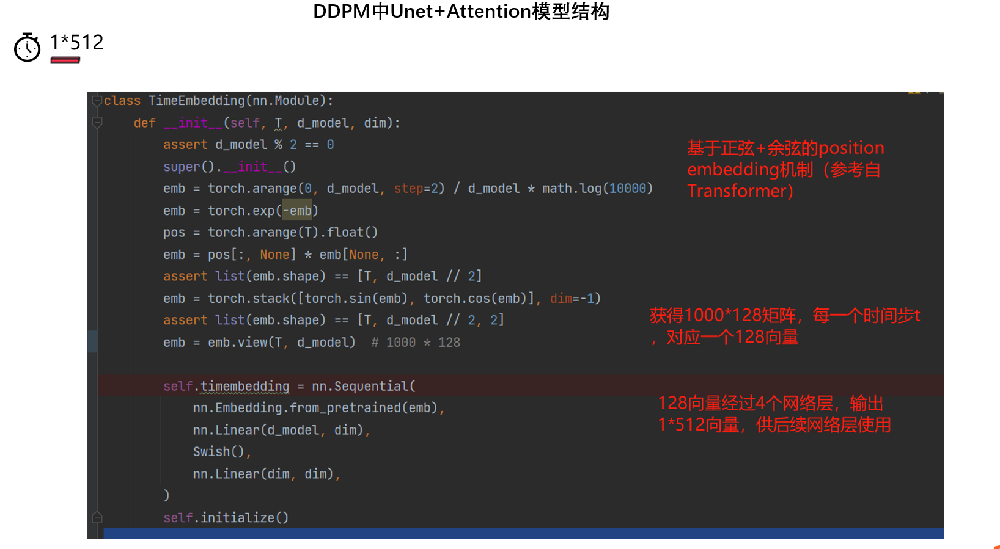
第二个，head模块，是一个3x3卷积，主要是为了改变通道，没有特殊的地方。
第三个，down block，是下采样的核心，一个block由2个ResBlock与一个下采样层构成。ResBlock内部如图所示：
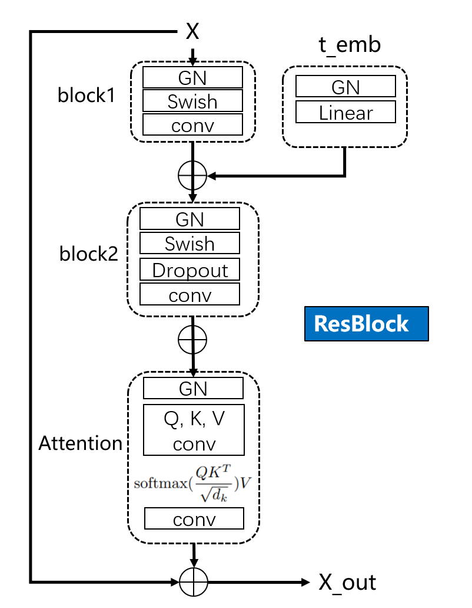
第四个，middle block，由两个ResBlock构成
self.middleblocks = nn.ModuleList([
ResBlock(now_ch, now_ch, tdim, dropout, attn=True),
ResBlock(now_ch, now_ch, tdim, dropout, attn=False),])
第五个，Up block，由3个ResBlock+1个上采样层，
第六个，tail，由GN + swish + conv构成，输出最终图像
self.tail = nn.Sequential(
nn.GroupNorm(32, now_ch),
Swish(),
nn.Conv2d(now_ch, 3, 3, stride=1, padding=1))
第七个，concat，是unet的low-level特征融合到high-level特征当中
总的来说，特色在于时间步t的embedding是加入了每一个ResBlock中进行使用，并且ResBlock采用了self-attention机制。
DDPM——训练Cifar-10
接下来使用配套代码中的Main.py进行训练，并且使用Main.py进行推理，训练和推理需要调整"state": "eval"。
- 数据准备：在Main.py同级目录下创建cifar文件夹，并且将cifar-10-python.tar.gz放到里边。
- 运行训练：python Main.py，1080ti上训练，约16小时，训练完毕，在Checkpoints文件下有ckpt_last_.pt。
下面观察cifar-10的训练细节，在配套代码中可以看到，数据采用torchvision提供的cifar10 dataset接口，模型为Unet，优化器为AdamW，学习率为warmup+consine。
在主循环中，只用了images，labels是没有使用到的。
模型的迭代，封装在了GaussianDiffusionTrainer类的forward函数，这也是核心代码之一，下面详细看看forward函数。
第5行：进行时间步的采样，即为每一个样本配一个时间步，并不需要为每个样本采样1000个时间步进行训练，这是因为公式推导的时候，xt可以用x0直接表示的，不需要依赖xt-1。
第6行：对需要加入的噪声进行采样，这里为标准正态分布
第11行：根据公式计算得到x_t，x_t由x0与noise加权得到，细节可看公式理解部分，这里的两个权重之和不等于一，但是接近1。
第14行：模型接收x_t与t，去预测噪声图像，并且通过mse_loss进行损失计算。
def forward(self, x_0):
"""
Algorithm 1.
"""
t = torch.randint(self.T, size=(x_0.shape[0], ), device=x_0.device) # 不需要1000步都训练，随机batchsize个
noise = torch.randn_like(x_0) # 标准正态分布
# 基于x0，获得xt， 随后得到训练数据[(xt, t, noise), ]
# x_t.shape [bs, 3, 32, 32]
# noise.shape [bs, 3, 32, 32]
# t.shape (bs,)
x_t = (extract(self.sqrt_alphas_bar, t, x_0.shape) * x_0 +
extract(self.sqrt_one_minus_alphas_bar, t, x_0.shape) * noise)
loss = F.mse_loss(self.model(x_t, t), noise, reduction='none')
return loss
代码与上文的原理介绍是一致的，时间步step2与加噪后的图像是输入数据，标签ground truth是noise。
DDPM——推理Cifar-10
训练完毕后，先看看推理效果。
首先在Main.py中修改 "state": "eval", # train or eval，然后运行python Main.py，即可在"sampled_dir": "./SampledImgs/ 文件夹下获得如下图片，看上去还像个样子，毕竟数据量、算力、时间摆在这里。
这里提供一个训练好的模型参数，ckptlast.pt，下载后放到Checkpoints文件夹。链接：https://pan.baidu.com/s/17X_L9oH4lmrGwnD-V9D5HQ 提取码：w4ki
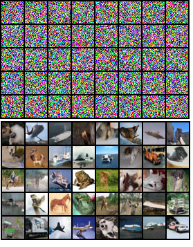
推理过程的代码理解相对有一点绕，主要还是参照论文中的sampling过程，如红框所示，首先获得均值（为什么叫均值？可能要去推一下公式了），然后加上时间步对应的标准差乘以随机噪声。
其中，均值主要是由Xt减去模型生成的噪声图像，并且以一定的权重加权后得到。
核心代码涉及3个函数，
- forward()为主函数。
- p_mean_variance()为调用Unet模型，获得mean和var。
- predict_xt_prev_mean_from_eps()是进行上图中红色框运算的过程。
第26行，获得模型预测的噪声图片
第27行，获得mean，即上图中的红色框
第15行，加上标准差乘以随机噪声，获得t时刻的输出，反复迭代1000次，得到最终输出图像。
def forward(self, x_T):
"""
Algorithm 2.
"""
x_t = x_T
for time_step in reversed(range(self.T)):
print(time_step)
t = x_t.new_ones([x_T.shape[0], ], dtype=torch.long) * time_step
mean, var = self.p_mean_variance(x_t=x_t, t=t) # mean是 xt图 减去 噪声图
# no noise when t == 0
if time_step > 0:
noise = torch.randn_like(x_t)
else:
noise = 0
x_t = mean + torch.sqrt(var) * noise
assert torch.isnan(x_t).int().sum() == 0, "nan in tensor."
x_0 = x_t
return torch.clip(x_0, -1, 1)
def p_mean_variance(self, x_t, t):
# below: only log_variance is used in the KL computations
# posterior_var: 由 betas计算得到，betas=[0.0001 to 0.02]
var = torch.cat([self.posterior_var[1:2], self.betas[1:]]) # betas=[0.0001 to 0.02]
var = extract(var, t, x_t.shape)
eps = self.model(x_t, t) # eps是unet输出的图像
xt_prev_mean = self.predict_xt_prev_mean_from_eps(x_t, t, eps=eps) # 加权减法，xt图 减去 噪声图
return xt_prev_mean, var
def predict_xt_prev_mean_from_eps(self, x_t, t, eps):
assert x_t.shape == eps.shape
return (
extract(self.coeff1, t, x_t.shape) * x_t -
extract(self.coeff2, t, x_t.shape) * eps
)
Diffusion Model 拓展 —— Guided Diffusion
guided diffusion是加入了引导信息，让生成的图像变为我们想要的形式，而不是随机的图片。
引导式的扩散模型从有无分类器，可以分为两种，classifier-base和classifier-free，classifier-free由于不需要分类器，引导信息直接embedding到模型中，所以应用更为广泛。
classifier-base ——《Diffusion Models Beat GANs on Image Synthesis》
DDPM提出后，其实效果并未惊艳大家，在DDPM发表后的几个月，《Diffusion Models Beat GANs on Image Synthesis》的发表, 其github，把扩散模型带入了高潮，因为它效果比GAN更好，并且针对DDPM，引入了classifier-guidance思想，可以在生成时加入条件约束，可控制生成特定类别的图像。
具体公式详见原文。在使用时，采用unet估计mean时，需要额外加上分类器的分类结果的梯度，详见openai的github:https://github.com/openai/guided-diffusion
第4行：均值除了unet的，还需要加入分类器得到的梯度
第7行：分类器推理，计算梯度过程，这里有个重要参数是args.classifier_scale
# guided_diffusion/gaussian_diffusion.py
def condition_mean(self, cond_fn, p_mean_var, x, t, model_kwargs=None):
gradient = cond_fn(x, self._scale_timesteps(t), **model_kwargs)
new_mean = (p_mean_var["mean"].float() + p_mean_var["variance"] * gradient.float())
return new_mean
# scripts/classifier_sample.py
def cond_fn(x, t, y=None):
assert y is not None
with th.enable_grad():
x_in = x.detach().requires_grad_(True)
logits = classifier(x_in, t)
log_probs = F.log_softmax(logits, dim=-1)
selected = log_probs[range(len(logits)), y.view(-1)]
return th.autograd.grad(selected.sum(), x_in)[0] * args.classifier_scale
classifier-free —— 《classifier free diffusion guidance》
由于classifier-base需要训练分类器，并且在推理时有超参数args.classifier_scale的影响，以及引导条件的加入过于单一，没有办法通用性的加入各类条件。
为此，谷歌大脑的两位工程师提出了classifier free的方式，文中将分类信息通过embedding的方式加入到模型中训练，这里类似时间步t的embedding。
训练时会结合有条件与无条件进行训练，无条件则将分类标签embedding全部设置为0，具体细节可参见论文。
由于论文中没有提供代码，所以找到的代码是这个DDPM，其中的condition模式就是classifier-free。
第2行：训练时，有10%的是无条件的，90%是有条件的
第9行：标签信息与时间步一样，通过embedding汇入模型中，称为引导信息。
# DiffusionFreeGuidence/TrainCondition.py
if np.random.rand() < 0.1:
labels = torch.zeros_like(labels).to(device)
# DiffusionFreeGuidence/ModelCondition.py
def forward(self, x, t, labels):
# Timestep embedding
temb = self.time_embedding(t)
cemb = self.cond_embedding(labels)
# Downsampling
h = self.head(x)
hs = [h]
for layer in self.downblocks:
h = layer(h, temb, cemb)
hs.append(h)
...略
classifier free diffusion是打开了一扇大门，既然类别标签可以embedding，那么文本信息也可以通过该方式注入模型中进行引导，火爆的Stable Diffusion就是这么做的。
Diffusion Model 拓展 —— Stable Diffusion
Stable Diffusion 是2022年火爆全球的文图生成（text-to-image）扩散模型，由于它开源，并且效果相当炸裂，因此已经被大多数人使用。
Stable Diffusion 背后的技术是LDM（latent diffusion model），之所以叫Stable Diffusion，或许与其背后的公司由Stability AI有关。
Stable Diffusion 是由CompVis、Stability AI和LAION三家公司共同创建，CompVis提供的技术LDM（latent diffusion model）源自论文《High-Resolution Image Synthesis with Latent Diffusion Models》，对应的github。LAION公司是一家致力于推动人工智能和数据科学发展的科技公司，其从互联网上抓取的 58 亿「图像-文本」数据，并开源了 LAION-5B数据集。而Stability AI的贡献，或许是出钱出力出人吧。
Stable Diffusion 的开源代码: https://github.com/CompVis/stable-diffusion 与 LDM（latent diffusion model）的开源代码:https://github.com/CompVis/latent-diffusion都在CompVis下，代码几乎一样。
下面简要介绍Stable Diffusion用到的latent diffusion model技术。
LDM之前，扩散模型在像素域进行扩散与去噪，这样的计算量过大。因此，考虑将扩散过程放到隐空间（latent space），即将数据经过encoder，来到特征空间，在特征空间上进行扩散和去噪。
这样一来，有以下好处：
- 计算量减小，训练和推理速度变快
- 可以加入更多引导信息，例如文本信息。
LDM论文中有一幅图很好的解释了LDM的思想：首先在pixel space，需要有encoder和decoder，在latent space采用了多头注意力机制，并且除了时间步信息，加入了conditioning模块，其中的引导信息可以是文本、图片、表征向量等等一切内容，然后为引导信息配一个embedding模块，就可以将引导信息加入模型中。
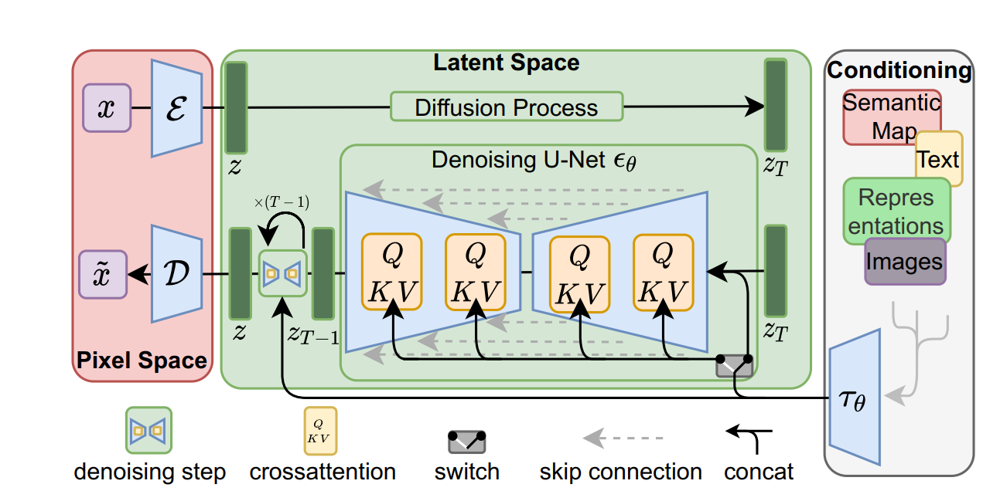
这里配上李宏毅老师的结构示意图，可知道LDM的核心在于2当中，处理的不再是像素空间，而是一个特征空间
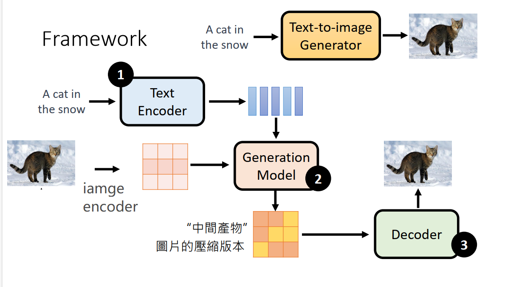
stable diffusion 的使用与安装，网上有太多教程，这里不进行介绍，主要了解LDM的架构。推荐阅读:文生图模型之Stable Diffusion
与Stable Diffusion同一时期，叫得上名称的文图生成模型还有Midjourney、DALL-E 2，不过它们都是不开源的。
小结
本案例借助DDPM的代码剖析，了解扩散模型实现去噪，从而生成图像的过程和原理，并且对Guided Diffusion Model进行介绍，模型要能根据我们的“指示”生成特定的图像，这样的模型才有更大的应用价值。
在Guided Diffusion Model中，包含classifier-base 和 classifier-free，classifier-free是后来的主流。
classifier-free的代表即出圈的Stable Diffusion，Stable Diffusion是完全开源的，因此得到了全球的使用与关注。
在扩散模型中，LDM（latent diffusion model）思想值得仔细研究，它将一切信息都放到隐空间（特征空间）进行处理，使得图片处理起来更小，还可以进行多模态处理。